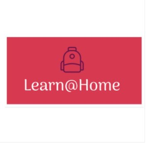

Projets

Projet 13 : Mise à l’échelle d’une application Django
- Utiliser la méthodologie CI/CD avec CircleCI
- Mettre en place un système de contrôle des codes via Sentry
- Déployement de l'application sur Heroku
- Deployement de l'image sur Docker

Projet 12 : API RESTful d'un gestionnaire de la relation clients (CRM)
- Realisée avec Django REST Framework
- Base de données sécurisée PostgreSQL
- Documentation de l'API sur Postman

Projet 11 : Plateforme numérique pour coordonner des compétitions sportives
- Analysez la performance d’une application avec Locust
- Implémentez une suite de tests controlés via Pytest
- Gérer les erreurs et les exceptions en Python via TDD

Projet 10 : API RESTful permettant de remonter et suivre des problèmes techniques (issue tracking system)
- Créer une API RESTful avec Django REST Framework
- Sécuriser l'API afin de respecter les normes OWASP et RGPD
- Documentation de l'API sur Postman

Projet 9 : Réseau social d'échange de livres utilisant Django
- Utiliser le rendu côté serveur dans Django
- Développer une application web en utilisant Django
- Mise en page front-end via Bootstrap

Projet 7 : Algorithmes aidant l'achat d'actions boursieres en utilisant la notation Big O
- Solution bruteforce et solution optimisée
- Développer un algorithme pour résoudre un problème

Projet 6 : Interface utilisateur permettant de visualiser en temps réel une classification des films
- Développer la partie Front-End d’une application avec HTML, CSS et JavaScript
- Interagir avec une API REST

Projet 4 : Gestionnaire de tournois d'échec en utilisant la P.O.O
- Respect de la PEP 8
- Utilisation de la programmation orientée objet
- Utilisation d'un design pattern

Projet 3 : Ecrire des user stories, backlogs et wireframes pour une messagerie instantanée d'entraide
- Définir les exigences fonctionnelles de l’application à partir du besoin client
- Méthode Agile
- Prototype d'une solution technique avec des modèles de domaine et maquettes

Projet 2 : Système de suivi des prix de livres d'un site web
- Webscraping : librairie Beautifulsoup4
- Gérer les données à l'aide du processus ETL
- Configurer un environnement Python